RTESArenaAssist è un'applicazione che, mentre giochi a The Elder Scrolls: Arena, mostra a lato traduzioni, mappa, diario, registro, gestione dei salvataggi, catture, dizionario e manuale.
Le immagini mostrano Assist nella tua lingua di visualizzazione, con il tema «Scuro», le impostazioni iniziali e senza connessione. Quando è connesso, ciò che viene mostrato cambia in base alla schermata attuale di Arena e allo stato di gioco.
Il modo di usarlo di base è avviare Arena, connettere Assist e giocare entrando nella modalità layout con il pulsante ⊞. Nella modalità layout puoi disporre nella stessa schermata la finestra di gioco di DOSBox e la traduzione, la mappa e le schede di Assist, così non devi passare da una finestra all'altra con Alt+Tab.
Per i dettagli sulle impostazioni, consulta la pagina «Impostazioni» di questo manuale.
La versione pubblica non include i dati originali di Arena. Al primo avvio, i file di traduzione vengono generati a partire dalla cartella di Arena dell'utente.
Come prima cosa scegli la lingua di visualizzazione di Assist. La lingua scelta viene applicata subito in questa schermata.
| Operazione | Descrizione |
|---|---|
| Menu a discesa della lingua | Sceglie la lingua dell'interfaccia di Assist. In questa schermata si può scegliere solo tra giapponese, English ed Español. Le altre lingue si scelgono dopo l'avvio, con «Lingua» nella scheda «Generale» della finestra Impostazioni. |
Next (Avanti) | Passa alla scelta della cartella di Arena. |
Se prosegui con Arena già avviato, Assist rileva automaticamente la cartella di installazione dal gioco in esecuzione. Se il rilevamento automatico non riesce, indica la cartella dei dati di Arena con Browse... (Sfoglia).

| Voce | Descrizione |
|---|---|
Game install folder (cartella di installazione del gioco) | Indica la cartella ARENA di Arena. |
Browse... (Sfoglia) | Indica la cartella di Arena con la finestra di selezione cartella. |
Re-check (Ricontrolla) | Rileva di nuovo l'Arena in esecuzione. |
Build translation files (Crea i file di traduzione) | Quando è stata trovata una cartella di Arena valida, passa alla generazione dei file di traduzione. |
Genera i file di traduzione per Assist a partire dai dati della cartella di Arena. Al termine si passa alla schermata principale.

Durante la creazione vengono mostrati una barra di avanzamento e la fase in corso. I dati vengono letti anche da Arena in esecuzione, quindi non chiudere Arena fino al termine.
In alto in Assist c'è la barra di connessione, al centro l'area delle schede e in basso la barra di stato.
Subito dopo l'avvio non c'è connessione. Con Arena / DOSBox avviato, premi il pulsante Connetti in alto a destra.

| Area | Descrizione |
|---|---|
| Stato della connessione | Mostra se non c'è connessione, il nome della schermata in corso e il nome dell'IMG. |
| Connetti / Disconnetti | Si connette ad Arena in DOSBox, oppure interrompe la connessione. |
⏸ / ▶ / ■ | Mette in pausa / riprende / ferma la lettura ad alta voce. La lettura ad alta voce si può usare dopo averla attivata nella scheda «Lettura ad Alta Voce» della finestra Impostazioni (per impostazione predefinita è OFF). |
⊞ | Attiva o disattiva la modalità layout. Con il clic destro si apre il menu della disposizione. |
📷 | Salva uno screenshot. Nella modalità layout salva l'intero layout in una sola immagine. Anche mentre il focus è sulla finestra di gioco (DOSBox), il tasto di scelta rapida (per impostazione predefinita F12) salva allo stesso modo. |
⚙ | Apre la finestra Impostazioni. |
Il messaggio «Tasto F12 registrato», che compare nella barra di stato subito dopo l'avvio, indica che il tasto di scelta rapida per la cattura è utilizzabile. Il tasto si può cambiare nella scheda «Generale» della finestra Impostazioni.
Una volta connesso, all'estremità sinistra della barra di connessione compare il nome della schermata riconosciuta. L'esempio seguente mostra la connessione alla schermata del titolo di Arena.
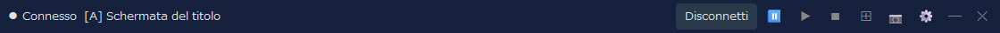
A destra del nome della schermata compare anche il nome dell'IMG usato da quella schermata (non compare per le schermate che non usano IMG, come la schermata del titolo). Nella scheda «Schermo» della finestra Impostazioni puoi scegliere se mostrare il nome della schermata, il nome dell'IMG o entrambi.
Assist è pensato per essere usato di norma nella modalità layout. Le schede funzionano anche nella finestra normale, ma con la modalità layout puoi tenere fissi nella stessa schermata il gioco, la traduzione, la mappa, il registro e altro ancora.
Nel layout predefinito, a sinistra c'è la schermata di gioco di DOSBox, a destra le schede principali di Assist e in basso un pannello ausiliario. Durante il gioco puoi consultare a destra la mappa o il diario e controllare la traduzione della schermata attuale in basso o nella scheda Traduci.
| Operazione | Descrizione |
|---|---|
Clic sinistro su ⊞ | Avvia o termina la modalità layout. |
Clic destro su ⊞ | Permette di scegliere la forma della disposizione, l'angolo di posizionamento, la modalità di tracciamento, la nuova disposizione, il primo piano e altro. |
📷 | Nella modalità layout salva l'intero layout, DOSBox e Assist compresi, in una sola immagine. |
Disconnetti | Interrompe la connessione con Arena. Se esci dalla modalità layout prima di disconnetterti, è più facile rimettere in ordine le finestre. |
Le schermate di ogni scheda servono a mostrare com'è fatta la schermata. Quando sei connesso, il contenuto viene aggiornato in base alla schermata attuale di Arena e allo stato di gioco.
È la scheda principale, che mostra la traduzione corrispondente alla schermata attuale. Il contenuto cambia in base alla situazione: schermata del titolo, creazione del personaggio, conversazioni, strutture, oggetti, incantesimi e così via.
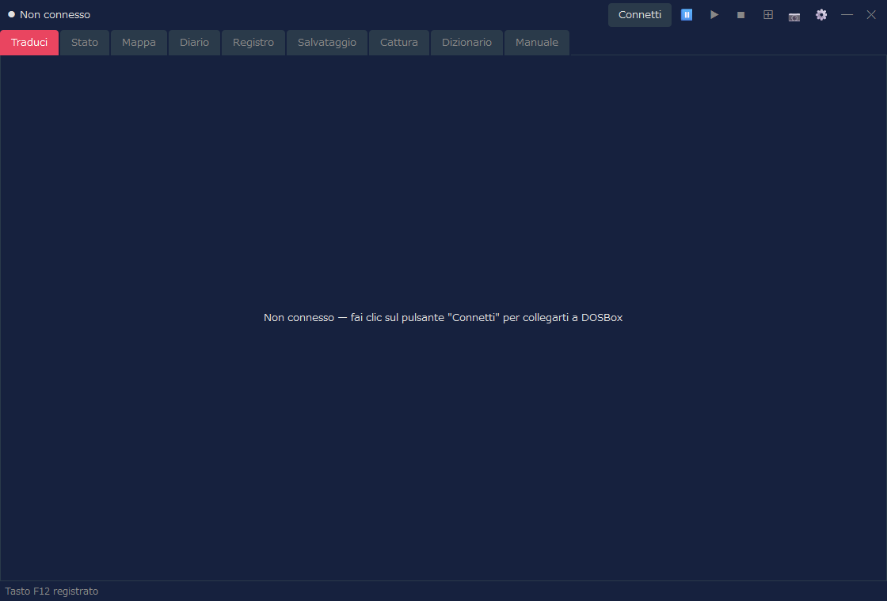
| Contenuto | Descrizione |
|---|---|
| Traduzione | Mostra la traduzione, nella lingua di visualizzazione, della schermata o dell'evento attuale. |
| Originale | In base alle impostazioni, mostra anche il corrispondente testo originale in inglese. |
| Visualizzazioni dedicate | Elenco delle classi, elenco delle razze, equipaggiamento, elenco delle strutture, elenco degli acquisti e simili passano a una visualizzazione dedicata, più leggibile. |
Con la scheda «Informazioni di combattimento» delle impostazioni puoi mostrare le informazioni di combattimento anche nella scheda Traduci. Scegli «Combattimento e vista normale» oppure «Vista completa del combattimento», poi indica se vuoi le informazioni come testo o come indicatori dei nemici. Per impostazione predefinita è «Disattivato (vista normale)», che mantiene la visualizzazione tradizionale della scheda Traduci.
È la scheda in cui controllare gli attributi e la condizione del personaggio. Dopo la creazione del personaggio, oppure se sei connesso durante il gioco, vengono mostrate le informazioni di stato.
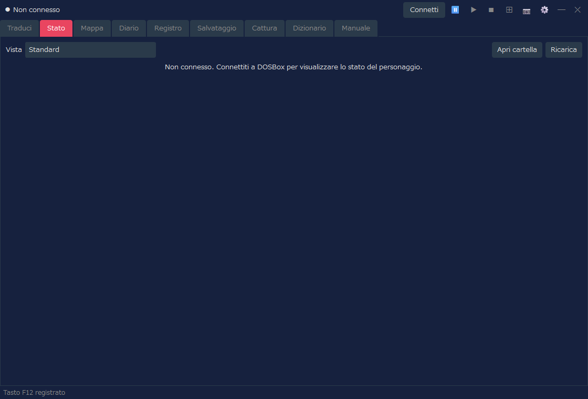
| Contenuto | Descrizione |
|---|---|
| Vista | Scegli «Standard» (la visualizzazione usata finora) oppure un design a piacere (una scheda del personaggio). Anche la schermata di stato e la distribuzione degli attributi nella scheda Traduci usano la vista scelta qui. |
| Attributi | Puoi controllare gli attributi principali, come Forza e Intelligenza. |
| Valori di stato | Puoi controllare salute, fatica, Punti Incantesimo e così via. |
| Operazioni di modifica | Le operazioni come la modifica degli attributi sono disponibili solo se hai attivato esplicitamente le impostazioni dei trucchi (nella vista «Standard»). |
È la funzione che mostra lo stato con un design a scelta. Se in «Vista» scegli qualcosa di diverso da «Standard», lo stato viene mostrato con il design scelto. Un design è un file HTML (un modello) e i design inclusi sono 8. Puoi anche crearne uno tuo. Alcuni design mostrano il volto e l'immagine a figura intera (equipaggiamento compreso), la condizione del personaggio (malattia, veleno, paralisi e così via) e la classe armatura di ogni parte del corpo (un valore calcolato dall'equipaggiamento; più è basso, meglio si è protetti). Il volto e l'immagine a figura intera vengono creati dai file del tuo Arena.
| Operazione | Descrizione |
|---|---|
| Apri cartella | Apre la cartella in cui mettere le tue schede del personaggio (file HTML): character_sheets, nella stessa posizione di RTESArenaAssist.exe. La prima volta che la apri vi vengono messe le copie dei design inclusi. I file che metti compaiono nell'elenco «Vista» con «(cartella)» accanto al nome. |
| Ricarica | Rilegge le schede del personaggio della cartella. Premilo dopo aver modificato un file. |
Per l'elenco dei design inclusi, il funzionamento delle schede del personaggio, i valori che si possono inserire e come scriverli, consulta la pagina «Design dello stato (schede del personaggio)» di questo manuale.
Mostra la mappa automatica di dungeon, città, campo aperto, interni e così via. La visualizzazione si aggiorna in base alla posizione attuale nel gioco.
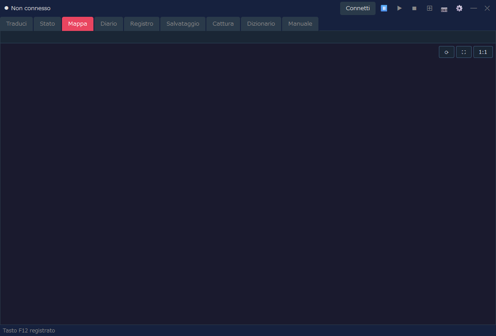
| Contenuto | Descrizione |
|---|---|
| Posizione attuale | Dallo stato di gioco connesso, mostra la mappa e la posizione attuali. |
| Mappa automatica | Disegna le aree già note, i muri, gli ingressi, il terreno del campo e così via. |
| Impostazioni di visualizzazione | Griglia, coordinate dei blocchi, visualizzazione estesa del campo e altro si regolano dalla finestra Impostazioni. |
È la scheda in cui consultare, nella lingua di visualizzazione, ciò che è registrato nel Diario (Logbook) del gioco.
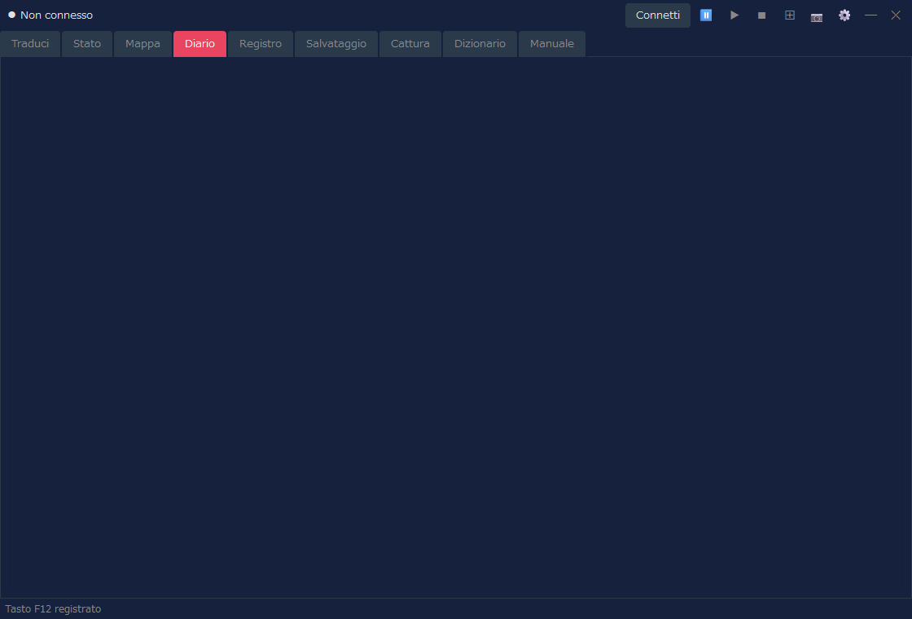
| Contenuto | Descrizione |
|---|---|
| Data e titolo | Mostra la data e il riepilogo delle voci del diario. |
| Testo | Mostra il testo del Diario nella lingua di visualizzazione. |
| Aggiornamento | Quando il diario viene aggiornato nel gioco, si aggiorna anche la visualizzazione di Assist. |
È la scheda in cui consultare come cronologia le traduzioni mostrate da Assist. È utile per rileggere in seguito un testo che ti è sfuggito.
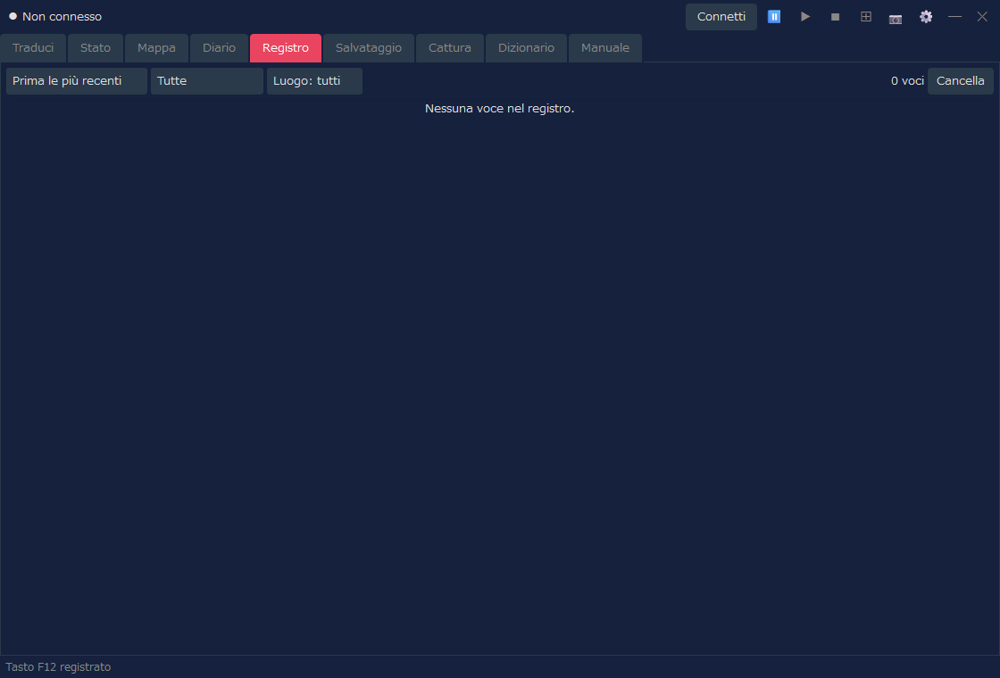
| Operazione | Descrizione |
|---|---|
| Ordine | Alterna tra «prima le più recenti» e «prima le più vecchie». |
| Filtro | Restringe il registro per tipo o per luogo. |
| Cancella | Cancella il registro mostrato. |
Se hai attivato il salvataggio del registro di combattimento e c'è qualcosa di registrato, nella scheda Registro puoi passare da «Registro normale» a «Registro di combattimento». Se non c'è alcun registro di combattimento, viene mostrato solo il registro normale, come prima.
È la scheda per gestire gli slot di salvataggio di Arena e i backup. Aiuta nelle operazioni sui dati di salvataggio, come il backup automatico prima del ripristino.
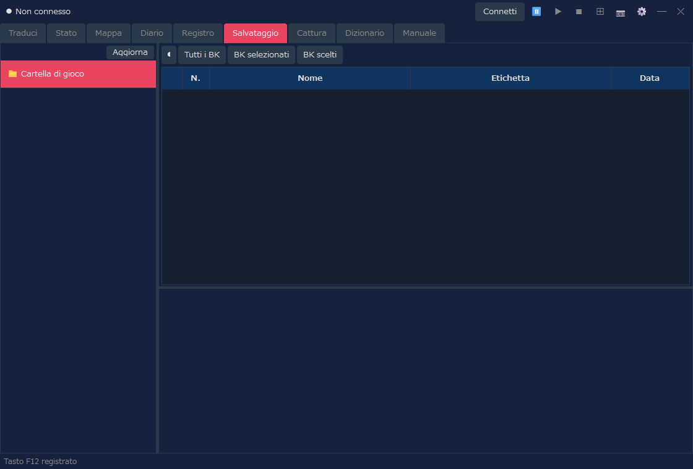
| Operazione | Descrizione |
|---|---|
| Elenco degli slot | Mostra l'elenco degli slot di salvataggio di Arena. |
| Backup | Esegue il backup del salvataggio selezionato. |
| Ripristino | Ripristina i dati di salvataggio da un backup. |
| Eliminazione | Elimina i backup o i salvataggi non più necessari. |
È la scheda in cui consultare gli screenshot salvati con il pulsante 📷. Da qui si aprono anche le immagini catturate nella modalità layout.
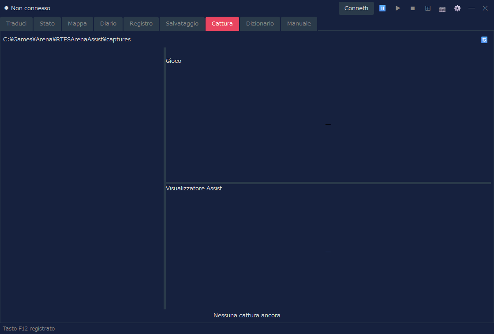
| Operazione | Descrizione |
|---|---|
| Elenco | Mostra le catture salvate. |
| Anteprima | Permette di controllare l'immagine selezionata. |
| Blocco | Protegge dall'eliminazione le immagini che vuoi conservare. |
| Eliminazione | Elimina l'immagine selezionata o le immagini non più necessarie. |
È la scheda per cercare nel dizionario di traduzione e nei testi dei dungeon di Assist. Serve a controllare parole e frasi comparse nel gioco.
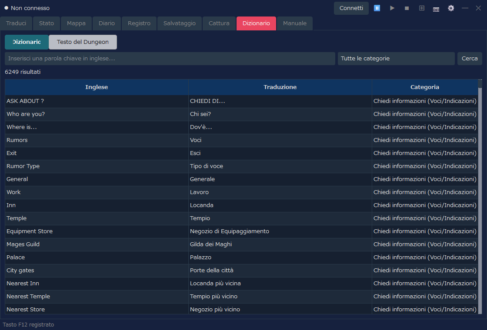
| Modalità di visualizzazione | Descrizione |
|---|---|
| Dizionario | Cerca per parola chiave in inglese, traduzione e categoria. |
| Testo del Dungeon | Cerca e consulta i testi dei dungeon provenienti dai file INF. |
È la scheda in cui consultare, nella lingua di visualizzazione, la spiegazione dei comandi di base e del sistema di Arena e quella delle funzioni di Assist. La usi quando durante il gioco vuoi controllare un comando o un termine.
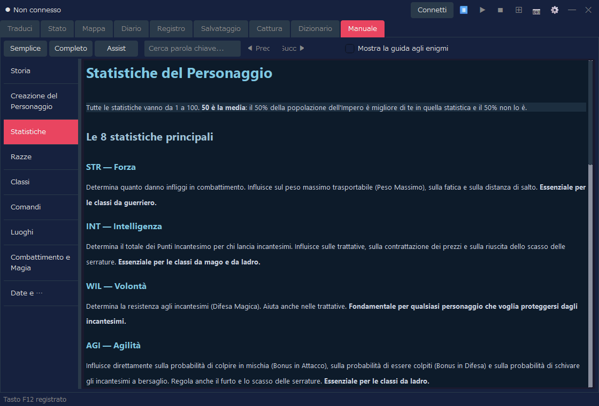
| Operazione | Descrizione |
|---|---|
| Semplice / Completo / Assist | Cambia il contenuto mostrato (tabella seguente). |
| Ricerca per parola chiave | Cerca all'interno del manuale. |
| Elenco a sinistra | Permette di passare da un capitolo all'altro: storia, creazione del personaggio, comandi, combattimento e così via. |
| Modalità | Contenuto | Lingue |
|---|---|---|
| Semplice | Spiegazione del gioco (9 capitoli) | 7 lingue |
| Completo | Traduzione del manuale ufficiale (mostrata dopo aver importato un pacchetto di traduzione) | Al momento solo giapponese |
| Assist | Spiegazione delle funzioni di Assist (uso di base, finestra Impostazioni, design dello stato (schede del personaggio)) | 7 lingue |
Versione completa (traduzione del manuale ufficiale)
Con «Completo» puoi leggere la traduzione del manuale ufficiale (la Player's Guide e il relativo addendum). Le traduzioni sono distribuite, separatamente dall'applicazione, come pacchetti di traduzione per ogni lingua di visualizzazione (RTESArenaAssist-manual-<lingua>.zip) nella pagina di download del manuale (al momento solo giapponese). La prima volta che lo usi, importalo con la procedura seguente.
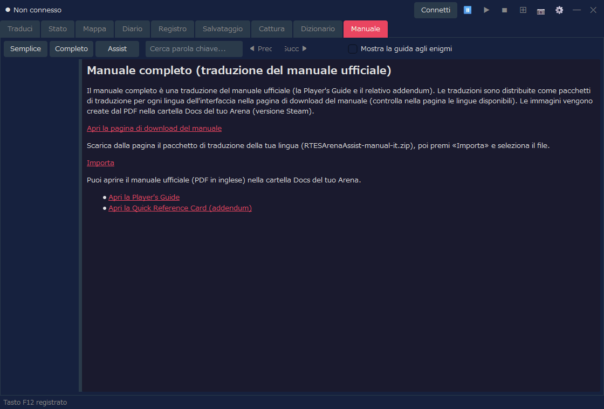
Le immagini del manuale vengono create da Player Guide.pdf, che si trova nella cartella Docs del tuo Arena (versione Steam). Se il PDF non viene trovato o è di un'altra versione, viene mostrato solo il testo. Controlla la «Cartella di gioco» nelle impostazioni e poi premi «Ricrea le immagini»: compariranno anche le immagini. Dopo l'importazione puoi eliminare il file scaricato. Assist non si connette a Internet (il download si fa con il tuo browser).
In «Completo» compaiono anche i collegamenti per aprire il manuale ufficiale (PDF in inglese) che si trova nella cartella Docs. Se la lingua di visualizzazione è l'inglese, al posto del pacchetto di traduzione vengono mostrati solo questi collegamenti.
Connetti in alto a destra in Assist per connetterti ad Arena / DOSBox.⊞ per entrare nella modalità layout.📷 o con il tasto di scelta rapida (per impostazione predefinita F12).⊞ e, se serve, premi Disconnetti.Dimensione della visualizzazione della modalità layout, forma della disposizione, pannello di traduzione, cartella di salvataggio delle catture e altro si regolano dalla finestra Impostazioni. Anche per usare la lettura ad alta voce delle traduzioni, la attivi nella scheda «Lettura ad Alta Voce» della finestra Impostazioni.